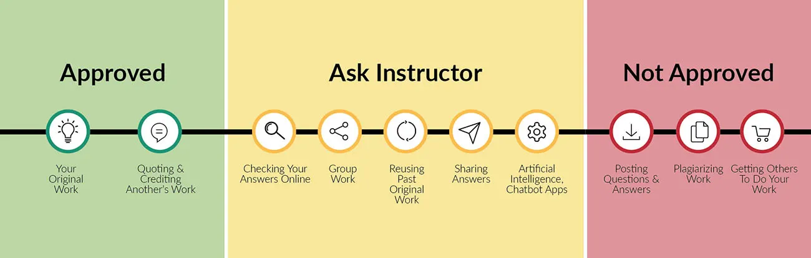

About OpenStax
OpenStax is part of Rice University, which is a 501(c)(3) nonprofit charitable corporation. Our mission is to make an amazing education accessible for all. Through our partnerships with philanthropic organizations and our alliance with other educational resource companies, we're breaking down the most common barriers to learning. Because we believe that everyone should and can have access to knowledge.
About OpenStax resources
Customization
Introduction to Behavioral Neuroscience is licensed under a Creative Commons Attribution-NonCommercial-ShareAlike 4.0 International (CC-BY-NC-SA) license, which means that you can distribute, remix, and build upon the content, as long as you provide attribution to OpenStax and its content contributors, do not use the content for commercial purposes, and distribute the content under the same CC-BY-NC-SA license.
Because our books are openly licensed, you are free to use the entire book or select only the sections that are most relevant to the needs of your course. Feel free to remix the content for non-commercial use by assigning your students certain chapters and sections in your syllabus, in the order that you prefer. You can even provide a direct link in your syllabus to the sections in the web view of your book.
Instructors also have the option of creating a customized version of their OpenStax book. Visit the Instructor Resources section of your book page on OpenStax.org for more information.
Art Attribution
In Introduction to Behavioral Neuroscience, most art is originally created in Biorender software by a team, primarily consisting of undergraduates (see acknowledgements). The original art in this text has no attribution in the figure caption. If you reuse art from this text that does not have attribution provided, use the following attribution: Copyright Rice University, OpenStax, under CC BY-NC-SA 4.0 license. Art sourced from 3rd parties contains attribution to its title, creator or rights holder, host platform, and license within the caption. The license restrictions in the attribution should follow the art when reused and/or adapted.
Errata
All OpenStax textbooks undergo a rigorous review process. However, like any professional-grade textbook, errors sometimes occur. In addition, the wide range of hypotheses, data, and techniques in neuroscience change frequently, and portions of the textbook may become out of date. Since our books are web-based, we can make updates periodically when deemed pedagogically necessary. If you have a correction to suggest, submit it through the link on your book page on OpenStax.org. Subject matter experts review all errata suggestions. OpenStax is committed to remaining transparent about all updates, so you will also find a list of past and pending errata changes on your book page on OpenStax.org.
Format
You can access this textbook for free in web view or PDF through OpenStax.org, and for a low cost in print. The web view is the recommended format because it is the most accessible—including being WCAG 2.2 AA compliant—and most current. Print versions are available for individual purchase, or they may be ordered through your campus bookstore.
About Introduction to Behavioral Neuroscience
Introduction to Behavioral Neuroscience aligns to the topics and objectives of many introductory behavioral neuroscience courses. This type of course, which typically targets entry-level undergraduates with no presumed college-level science coursework, goes by many names, such as Behavioral Neuroscience or Biological Bases of Behavior. These courses and this resource share the goal of presenting the foundational principles of brain-behavior-environment interactions. In Introduction to Behavioral Neuroscience, students will begin to understand how the physiology of the nervous system and the environment dictate our movements, thoughts and feelings. Students will be challenged to think about real neuroscience experiments, appreciate how neuroscience knowledge evolves over time, and consider open questions. They will also be invited to learn about the people behind the science, such as through author interview videos.
Pedagogical foundation
The content of Introduction to Behavioral Neuroscience is intended to prepare students, typically undergraduates taking their first neuroscience course, with the core principles of behavioral neuroscience. At many universities, this material would be presented in the first course of a neuroscience major and would be considered a prerequisite for subsequent courses in the major. In addition, the courses targeted by this resource frequently have high enrollments from non-majors as well. The material is presented with these non-major students in mind too.
Introduction to Behavioral Neuroscience begins with 3 chapters covering basic systems and cellular neuroanatomy, neuronal physiology, and neurochemistry. These first 3 chapters are considered requisite knowledge for all the following chapters. The subsequent chapters can be used in any order and any combination. They cover the major subfields of neuroscience, arranged in 5 units with 2-4 chapters each: evolution and development of the nervous system, sensory and motor systems, neuroendocrine systems and emotional regulation, internal regulation, and cognition. We encourage instructors to sample from this resource as little or as much as is useful for them. The Introduction to Behavioral Neuroscience Community Hub for this resource provides links to other open educational resources relevant to the type of course this resource targets, and we encourage instructors to consider sampling from these sources, as well.
Each chapter presented here is contributed by a unique set of authors. Collectively, these 26 authors represent a diverse array of backgrounds, institutions, and areas of expertise. All primary authors are expert neuroscientists with undergraduate teaching experience. They come from 11 different states in the United States of America. They range in seniority from assistant professors to the newly emeritus. Several chapters also include graduate trainee co-authors. Authors work at large state universities, small liberal art colleges and everything in between. The variety in their backgrounds and life stories as individuals can be especially appreciated in our Meet the Author videos that accompany each chapter. The diversity of authorship is considered a key pedagogical feature of this text. When reading a textbook, students not only learn what neuroscience is, but also who neuroscientists are (and often then infer who can be a neuroscientist). Our intention is to show students that anyone with a passion for neuroscience can be a part of this exciting field.
Key Features
- Neuroscience in the lab: Highlights neuroscience experiments, including description of how the methods are executed, the data obtained and the key conclusions from that data.
- People behind the science: Presents prominent neuroscientists and their major contributions to their field. Emphasis is placed on contemporary scientists who are currently active, though notable historical figures are also included.
- Feature boxes: Presents material that expands on core chapter text, such as enhanced detail on a main text topic, or interesting ties to medicine or public health that extend beyond the central material.
Key teaching/learning elements
Learning Objectives
Every section within each chapter begins with a set of clear and concise learning objectives, which inform students and instructors what new knowledge and skills will be derived from that part of the text. The learning objectives can assist instructors in selecting content and can help students identify key content. Successful mastery of a section would be established by being able to demonstrate the skills described by the learning objectives.
Themes
Though each chapter has unique authorship, this resource is still created to be a unified whole. A major part of that unity is a core set of themes that appear throughout the chapters. These themes are cross-discipline principles that permeate all fields of neuroscience and they are named in section or subsection titles to draw attention to them.
- Developmental perspective. Development and aging are potent modulators of behavior and brain. A lifespan perspective is relevant throughout the study of neuroscience.
- Science as a process. Neuroscience as a field is constantly advancing through new discovery. Many major questions remain open to investigation and old answers are frequently overturned by new advances. Major gaps in knowledge and/or recent overthrow of long-held ideas are common throughout neuroscience.
- Sex as a biological variable. Sex has well established roles throughout neuroscience. While one chapter of this resource is dedicated entirely to exploring sex differences in behavior and their development, the influence of genes, hormones and the environment on male-female differences permeates all subfields.
- Environment-brain bidirectional communication. Neither our nervous systems nor our environments exist in a vacuum. They are interdependent, with constant interchange between brain-behavior-environment.
- Neuroscience across species. Neuroscience research relies on a synthesis of data across species to inform us of commonalities and diversity in the natural world. comparative neuroscience addresses this topic directly and in detail, but the contribution of cross-species research is essential in all subfields.
Special Characteristics
- Meet the author videos: Each chapter opens with a link to a short video interview of the author(s). These interviews were organized and created by an undergraduate student, India Carter (undergraduate neuroscience major, Ohio State University), in collaboration with the Ohio State University College of Arts and Sciences Tech Studio. In the videos, a more personal view of the authors is presented, including answers to questions like “What got you interested in neuroscience?” and “What do you research now?”. They also frequently offer their advice to students interested in pursuing neuroscience.
- Author summary videos: Each chapter ends with a link to a short video in which authors describe the main takeaway lesson they wish students to appreciate from their chapter. These are not detailed lists, but rather a guide to what core idea or theme authors wish students would retain. These videos were organized and created by an undergraduate student, India Carter (undergraduate neuroscience major, Ohio State University), in collaboration with the Ohio State University College of Arts and Sciences Tech Studio.
- Methods videos: Throughout the main chapters, there are links to original ancillary methods video chapters. These videos are authored by faculty, as well as graduate and postdoctoral trainees. In the videos, the authors both explain and demonstrate common techniques in neuroscience. Students can therefore not just learn the idea behind techniques but see what it looks like in action.
Section Quizzes
Chapter section quizzes include multiple choice and fill-in-the-blank questions. Multiple choice questions cover a range of Bloom’s taxonomy levels (remembering, understanding, and applying). Answers for odd numbered questions are provided in a key at the end of the resource.
About the authors
Senior Contributing Authors
Dr. Elizabeth D. Kirby (lead editor), The Ohio State University
Dr. Kirby is an associate professor of Behavioral Neuroscience in the Department of Psychology at The Ohio State University in Columbus, OH, USA. She has taught introduction to behavioral neuroscience to undergraduates since 2017. Her research specialty is the study of adult hippocampal neural stem cells.
Dr. Melissa J. Glenn (editor), Colby College
Dr. Glenn is a professor of psychology at Colby College. She has taught introductory courses in psychology and behavioral neuroscience as well as advanced courses on selected topics in neural plasticity and behavior and the biological basis of psychological disorders. Her research focuses on sex-specific lifespan trajectories of mental health and the development and use of rat models that leverage valid analogs of human sociality, emotionality and cognition.
Dr. Noah J. Sandstrom (editor), Williams College
Dr. Sandstrom is a professor of psychology and neuroscience at Williams College in Williamstown, MA, USA. He has taught introductory courses in psychology and neuroscience as well as several advanced courses including behavioral endocrinology and neuroethics. His research examines how hormonal and environmental factors influence neural and behavioral outcomes following brain trauma.
Dr. Christina L. Williams (editor), Duke University
Dr. Williams just became an emerita professor of Psychology & Neuroscience at Duke University in Durham, NC, USA. She has taught introduction to behavior neuroscience since 1982. Her research focused on how lifestyle factors and hormonal variation impact resilience to age and disease-related memory decline. A critical part of her career has been training future scientists, including Dr. Kirby (as an undergrad), Dr. Sandstrom (as a PhD student) and Dr. Glenn (as a postdoctoral fellow).
Contributing Authors (alphabetical by last name)
S. D. Bilbo, Duke University
Irina Calin-Jageman, Dominican University
Robert J. Calin-Jageman, Dominican University
Matt Carter, Williams College
Victoria L. Castro, University of Texas El Paso
Christine J. Charvet, Auburn University
Natalia Duque-Wilckens, North Carolina State University
Amy L. Griffin, University of Delaware
Yanabah Jaques, University of California Berkeley
Daniela Kaufer, University of California Berkeley
MeeJung Ko, University of California Berkeley
Megan M. Mahoney, University of Illinois Urbana-Champaign
C. Daniel Meliza, University of Virginia
Eric M. Mintz, Kent State University
Sandra E. Muroy, University of California Berkeley
Richard Olivo, Smith College
Yuan B. Peng, University of Texas Arlington
Briana E. Pinales, University of Texas El Paso
Anita M. Quintana, University of Texas El Paso
Shivon A. Robinson, Williams College
Michael Sandstrom, Central Michigan University
Cecil J. Saunders, Kean University
Gary L. Wenk, The Ohio State University
Cedric L. Williams, University of Virginia
Kevin D. Wilson, Gettysburg College
Joseph D. Zak, University of Illinois Chicago
Image creation team (from most to least number of images generated)
Elizabeth Kirby, associate professor, The Ohio State University
Nidhi Devasthali, undergraduate Neuroscience major, The Ohio State University
Raina Rindani, undergraduate Biology major, The Ohio State University
India Carter, undergraduate Neuroscience major, The Ohio State University
Gwendolyn Sebring, undergraduate Psychology major, The Ohio State University
Bryon Smith, research associate, The Ohio State University
Reviewers
Faculty reviewers (alphabetical by last name)
Charlotte Barkan, Williams College
Annaliese Beery, University of California Berkeley
Eric Bielefeld, The Ohio State University
Georgia Bishop, The Ohio State University
Melissa Burns-Cusato, Centre College
Clinton Cave, Middlebury College
Laurence Coutellier, The Ohio State University
Amanda Crocker, Middlebury College
Mike Dash, Middlebury College
Tobias Egner, Duke University
Sherif M. Elbasiouny, Wright State University
Rebecca Evans, Georgetown University
Timothy A. Evans, University of Arkansas
Nancy G Forger, Georgia State University
Andrea N Goldstein-Piekarski, Stanford University/VA Palo Alto Health Care System
Henry Hallock, Lafayette College
Alexis S. Hill, College of the Holy Cross
Kurt Illig, University of St. Thomas
Kris M. Martens, The Ohio State University
Nestor Matthews, Denison University
Christina McKittrick, Drew University
Ashley Nemes-Baran, Case Western Reserve University
Tracie Paine, Oberlin College
Vinay Parikh, Temple University
Jennifer Quinn and Jacob Dowell, Miami University
Raddy Ramos, New York College of Osteopathic Medicine/New York Institute of Technology
Michael J. Sandstrom, Central Michigan University
Ajay Satpute, Northeastern University
Neil Schmitzer-Torbert, Wabash College
Timothy Schoenfeld, Belmont University
Sally B. Seraphin, Trinity College
Robert Sikes, The Ohio State University
Mark Spritzer, Middlebury College
Leslie Stone-Roy, Colorado State University
Kristin Supe, The Ohio State University
Beth E. Wee, Tulane University
Alex White, Barnard College
Diana Williams, Florida State University
Undergraduate student reviewers
Habib Akouri, The Ohio State University
Jessica Areiza, Millersville University
Deepti Ayyappaneni, Saint Louis University
Bre Bishop, Harding University
India Carter, The Ohio State University
Madeline Chiang, University of Notre Dame
Emma Corbett , The Ohio State University
Sedonia Davis, Tulane University
Paige Galle, Williams College
Grant Gattuso, Williams College
Hailie Goldthorp, Tulane University
Amelie Finn, Duke University
Chloe Friedman, Tulane University
Yuichi Fukunaga, Williams College
Jenna Hersh, Colby College
Alex Johansen, Davidson College
Angela Kaja, Millersville University
Julia Leeman, Duke University
Reed Lessing, Duke University
Mikaela Lipp, Duke University
Talia Lurie, Tulane University
Alexandra Mann, Tulane University
Nathan McPherson, The Ohio State University
Kofi Mensah-Arhin, The Ohio State University
Tommy Montgomery, Colby College
Nikhita Nanduri, Duke University
Harris Naqvi, Drew University
Stephany Perez-Sanchez, Duke University
Adhithi Sreenivasan, Tulane University
Grace Reynolds, Williams College
Winna Xia, Tulane University
This material is based upon work supported by the National Science Foundation under grant 2035041. Any opinions, findings and conclusions or recommendations expressed in this material are those of the author(s) and do not necessarily reflect the views of the National Science Foundation.
An Affordable Learning Exchange grant to EDK from the Ohio State University also supported development of this material.
Additional Resources
Student and Instructor Resources
Additional resources for both students and instructors include a test bank, application questions for collaborative learning activities, and lecture slides. Instructor resources require a verified instructor account, which you can apply for when you log in or create your account on OpenStax.org. Take advantage of these resources to supplement your OpenStax book.
Test bank. A test bank with over 400 multiple-choice and fill-in-the-blank questions is available in Word format. Questions were contributed by authors, editors and the assessment development lead, Dr. Thomas Newpher (Associate Professor of the Practice, Department of Psychology and Neuroscience, Duke University). Dr. Newpher led the curation of the test bank from these multiple sources.
Application questions for collaborative learning activities. The instructor test bank also includes over 40 application questions that can be used for collaborative learning activities. These questions are written at Bloom’s higher-order levels (applying, analyzing, evaluating, and creating) and are designed to engage students in thoughtful discussions with peers and deepen student learning of course concepts. Application questions were generated by Dr. Newpher and chapter authors.
PowerPoint lecture slides. The PowerPoint slides provide a beginning point for lectures for each chapter. The images from the chapters are reproduced, often broken into smaller pieces. Some helpful text and bullet points are also provided to bring the material to a near-ready-to-use format. Individual instructors can uses these lecture slides as a starting point from which they can customize to their own preferences.
Academic Integrity
Academic integrity builds trust, understanding, equity, and genuine learning. While students may encounter significant challenges in their courses and their lives, doing their own work and maintaining a high degree of authenticity will result in meaningful outcomes that will extend far beyond their college career. Faculty, administrators, resource providers, and students should work together to maintain a fair and positive experience.
We realize that students benefit when academic integrity ground rules are established early in the course. To that end, OpenStax has created an interactive to aid with academic integrity discussions in your course.

Visit our academic integrity slider. Click and drag icons along the continuum to align these practices with your institution and course policies.You may then include the graphic on your syllabus, present it in your first course meeting, or create a handout for students.
At OpenStax we are also developing resources supporting authentic learning experiences and assessment. Please visit this book’s page for updates. For an in-depth review of academic integrity strategies, we highly recommend visiting the International Center of Academic Integrity (ICAI) website at https://academicintegrity.org/.
Community Hubs
OpenStax partners with the Institute for the Study of Knowledge Management in Education (ISKME) to offer Community Hubs on OER Commons—a platform for instructors to share community-created resources that support OpenStax books, free of charge. Through our Community Hubs, instructors can upload their own materials or download resources to use in their own courses, including additional ancillaries, teaching material, multimedia, and relevant course content. We encourage instructors to join the hubs for the subjects most relevant to your teaching and research as an opportunity both to enrich your courses and to engage with other faculty. To reach the Community Hubs, visit www.oercommons.org/hubs/openstax.
Technology partners
As allies in making high-quality learning materials accessible, our technology partners offer optional low-cost tools that are integrated with OpenStax books. To access the technology options for your text, visit your book page on OpenStax.org.